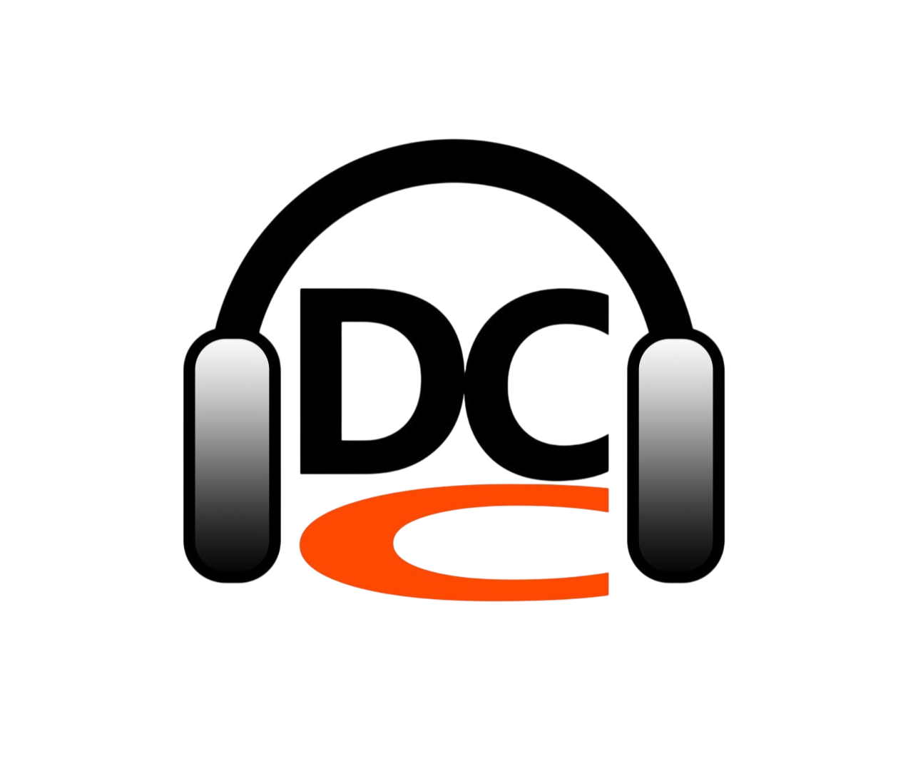
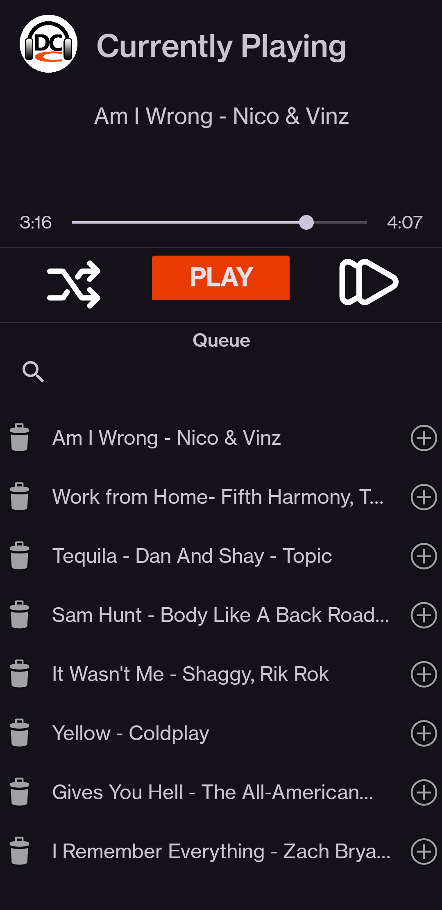

< Back
Home
Next >

Software 📱
Musi(dc)c


An alternative free music app that plays directly from my downloads. After dealing with Spotify's unskippable ads for far too long, I decided to make my own music player, free from ads, and offers features that Spotify has paywalled. However, my app can only run on Android devices.
Some features include: No ads (obviously), 100% offline use, unlimited shuffles, unlimited skips, the freedom to add/remove songs from the queue, and best of all, no account creation is required!
*Musi(dc)c is currently in its beta phase. Some features (like the search bar) are currently in development.